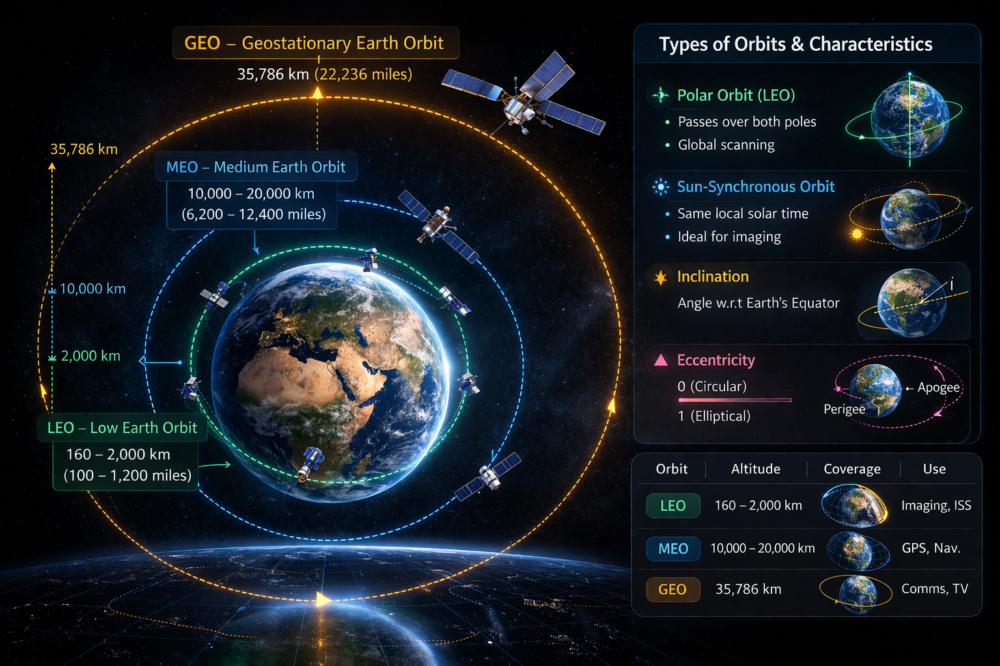

Satellite Systems
Satellites are spacecraft placed in orbit around Earth or other celestial
bodies to perform communication, navigation, observation and scientific
missions. Artificial satellites play a crucial role in modern society,
supporting global communication networks, navigation systems, weather
monitoring and Earth observation.
Types of Satellite Orbits
- Low Earth Orbit (LEO) – 160 km to 2,000 km altitude
- Medium Earth Orbit (MEO) – 2,000 km to 35,786 km altitude
- Geostationary Earth Orbit (GEO) – 35,786 km altitude
Different missions require different orbital regions. LEO satellites are
commonly used for Earth observation and imaging, MEO satellites support
navigation systems like GPS, and GEO satellites are widely used for
communication and broadcasting.
Orbital Regions Around Earth

The diagram above illustrates the three primary orbital regions around Earth:
Low Earth Orbit (LEO), Medium Earth Orbit (MEO) and Geostationary Earth Orbit
(GEO). Each orbital region has distinct altitude ranges, coverage areas and
applications depending on mission requirements.
Key Orbital Characteristics
- Polar Orbit: A type of Low Earth Orbit where the satellite passes
over both poles. As the Earth rotates beneath the orbit, the satellite can
scan the entire planet, making it ideal for Earth observation missions.
- Sun-Synchronous Orbit: A near-polar orbit that passes over the same
location on Earth at the same local solar time each day. This is useful for
imaging satellites that require consistent lighting conditions.
- Inclination: The angle between the satellite's orbital plane and
Earth's equatorial plane. Inclination determines the coverage area of the
satellite.
- Eccentricity: A parameter that defines how circular or elliptical
an orbit is. An eccentricity of 0 represents a circular orbit, while values
closer to 1 represent more elliptical orbits.
Satellite Applications
- Global communication networks
- Weather forecasting and climate monitoring
- Navigation systems (GPS, GLONASS, Galileo, NavIC)
- Earth observation and remote sensing
- Scientific research and space exploration